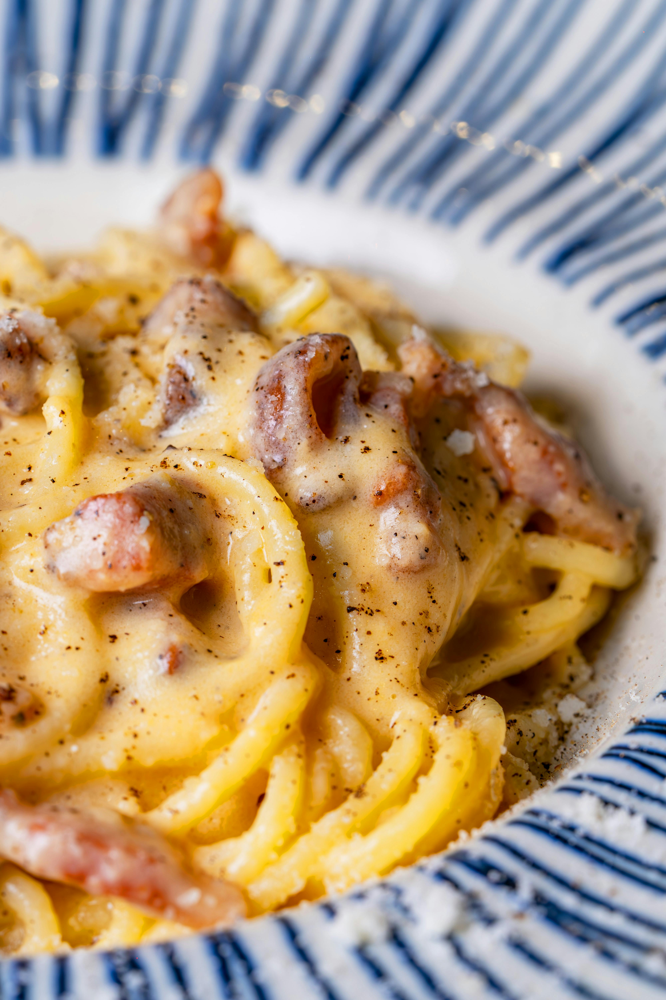

Menu

Pizza Margherita — 10€
La pizza Margherita è il simbolo della tradizione italiana, amata in tutto il mondo per la sua semplicità e genuinità.
Realizzata con una base di pasta lievitata lentamente, soffice e fragrante, viene arricchita da una salsa di pomodoro fresco preparata
con passione e ingredienti selezionati. La mozzarella di alta qualità, scelta con cura per garantire una perfetta fusione, si scioglie
lentamente donando cremosità ad ogni fetta. Il tocco finale è dato da un filo di olio extravergine d’oliva, che esalta i sapori,
e da foglie di basilico fresco, che aggiungono un profumo inconfondibile. La pizza Margherita è un vero e proprio capolavoro
di equilibrio tra semplicità e sapore, ideale per chi desidera gustare un piatto autentico, preparato con passione e tradizione.
Ogni morso racconta una storia di qualità e amore per la buona cucina italiana.

Spaghetti Carbonara — 13€
Gli spaghetti alla carbonara sono un classico intramontabile della cucina romana,
un piatto semplice ma ricco di sapore che conquista ogni palato. Preparati con spaghetti di alta qualità,
cotti al dente per mantenere una consistenza perfetta, vengono conditi con una cremosa salsa fatta con uova fresche,
formaggio Pecorino Romano grattugiato finemente e pepe nero macinato al momento. La pancetta o guanciale croccante,
rosolata lentamente per esaltare il suo aroma intenso, aggiunge una nota affumicata e avvolgente, creando un contrasto
irresistibile con la morbidezza della crema di uova. Nessuna panna o latte: la vera carbonara si basa sull’equilibrio
degli ingredienti semplici e genuini, che uniti creano un piatto dal gusto unico e avvolgente.
Perfetta per chi ama la tradizione, la carbonara è un’esplosione di sapori autentici che raccontano
la storia della cucina romana, capace di trasformare un pasto in un’esperienza indimenticabile.
Insalata 10€
La nostra insalata mista è un’esplosione di freschezza e colori, perfetta per chi cerca
un piatto leggero ma ricco di sapori autentici. Preparata con ingredienti di prima qualità, selezioniamo con cura
foglie croccanti di lattuga, rucola pepata, pomodorini dolci e succosi, cetrioli croccanti e carote tagliate a julienne,
per garantire una combinazione di consistenze piacevoli e un equilibrio perfetto tra dolcezza e freschezza.
Arricchita con olive nere dal sapore intenso e semi croccanti, la nostra insalata è condita con olio extra vergine d’oliva,
un pizzico di sale marino e una spruzzata di aceto balsamico tradizionale, che ne esaltano il gusto naturale senza coprirlo.
Ideale come contorno leggero o come piatto unico per chi desidera una pausa sana e gustosa, la nostra insalata mista è un vero
e proprio invito alla leggerezza e al benessere, perfetta in ogni stagione.

Tiramisu 6€
Il nostro tiramisù è un dolce al cucchiaio irresistibile, simbolo della tradizione dolciaria italiana.
Preparato con ingredienti genuini e di alta qualità, combina savoiardi delicatamente imbevuti nel caffè espresso intenso e aromatico,
alternati a strati morbidi e cremosi di mascarpone fresco e uova fresche. Spolverato generosamente con cacao amaro in polvere,
questo dessert unisce la dolcezza vellutata della crema con il gusto deciso del caffè, creando un equilibrio perfetto di sapori e consistenze.
Ogni porzione è un piccolo viaggio nel cuore della cucina italiana, capace di conquistare ogni palato con la sua leggerezza e cremosità.
Perfetto per concludere il pasto con un tocco di dolcezza e tradizione, proprio come vuole la migliore ricetta artigianale.